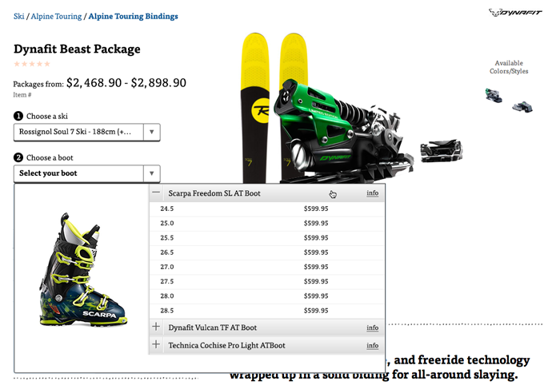
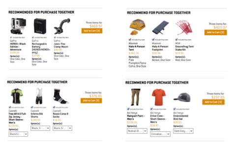
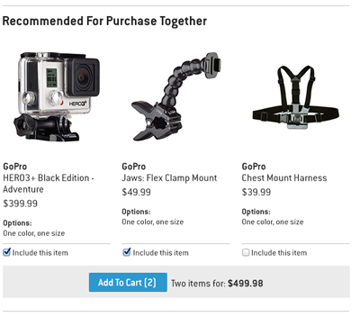
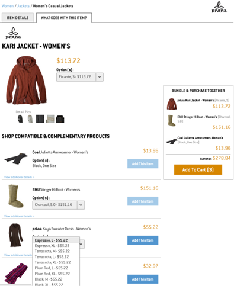

Executive Summary
Business Problem The solution Conclusion Why I chose this projectTract 1: buyBox Bundle Configurator
Altering the buyBoxTract 2: Cross-sell Widget
Complimentary recommendation widget Results Moving ForwardTract 3: Cross-sell tab
Complimentary product page Results Moving Forward The Bad: CollectionsDeclining orders. The year over year trend on Backcountry.com was a steady decrease in the number of products a customer was adding to their cart. With the high cost of customer acquisition it was a worrisome trend and increasing Units-Per-Order (UPO) became a strategic objective for 2013 and a carry over into 2014.
This was to be a phased solution where we would experiment with an existing Product Detail page, create recommendation widgets and a tabbed Product Detail page approach.
The first experiment was changing the buyBox experience to be an overly simplistic “bundler configurator” where the visitor could combine skis, bindings and boots into one order. The second experiment was to create a recommendation widget where the user could see complementary items and add them together with the parent item. Thirdly, creating a pivoted view of the Product Detail page where a visitor could find compatible and complementary products for purchase together.
Each solution and subsequent experiments had their own levels of success and failure along the way. We are still iterating, and encouraged as we have shown UPO increases above goal for the year. For example categories that benefited the most in Q4 were: Ski, Fly Fishing and Accessories. These categories saw ~4% of overall revenue generated through UPO widgets.
This was one of the rare instances where we were given a directive to change a business KPI and not given a solution beforehand. I had the time to work with my Project Manager to propose solutions and experiments to change customer behavior.
Everything in this use case I have had a hand in. Much of this work was a constant back and forth between all team members, and design reviews, so you will not find many statements pertaining to “I did this or that” as I feel much of my work is collaborative and we should all take credit. But with that said, I was the sole UX designer for this initiative and still am.
Our first foray into the concept of showing a parent product and suggesting additional products was forced by backcountry.com selling a specific binding. The dealer agreement for selling this binding was we needed to also sell an accompanying ski and boot as a complete package. The shortest path to launch was to alter the buyBox requiring selections of compatible items before a visitor could continue to the cart.
As mentioned earlier this was not a successful program for a couple of reasons; price point was extremely high, and the user experience was not intuitive. But what was learned from the internal process was enormous. Existing systems were leveraged to build a program where our merchandising group could for the first time have a parent product and associate products to it. So building human defined relationships within the catalog.
We took the backend system of product compatibility and created a widget which displays a parent product and two complimentary offers. A visitor has the ability to select which items they choose to purchase together through the check box, update the combined price and proceed directly to cart.
This widget was placed under the product description and was constructed as a way for the visitor to view products which the merchandising group felt should be sold together. The first iteration displayed only on product variant as a suggestion, but later we released the functionality to enable the visitor to select the size and color of the variant directly from the widget.
Another important change that was made in the second release was around how the merchandising group was suggesting products. I noticed early on that for some products the merchandisers were suggesting products from the same category. For example if the parent product was a jacket, they were suggesting 2 pant options. I requested a major change in the way the backend tool would work so that instead of allowing the merchandiser to suggest a pool of 10 items they had to first define a category, then add products to that. This way we insured that for the jacket example we would have recommended categories of pants, hats, gloves and the system could loop through and display only one for each category.
Although our traffic to pages is low, there are some highly encouraging results:
With only showing two products we have a very limited chance of showing compelling products to visitors. Future iterations of designs will move the purchase information to the bottom of the widget and allow for one more offer to display. Further iterations will experiment with more products once the Product Detail page template has been altered so that our widget can span fully across the page.
But in the mean time I ran a test to determine if moving the purchase information below would impact behavior. This test just began but it seems we have not changed engagement, which is encouraging.
A much bolder solution was to tab the entire Product Detail page to give a full page experience for complementary and compatible products. This solution was extremely controversial and technically hindered so experimentation has been limited.
Tabs at the top of the Product Detail allows the user to toggle between a traditional page and one with up to 5 complimentary products. Customers can evaluate details of each product within the shopping experience (description, tech specs, etc.) and can calculate price on multiple units together. The experience was very bare bones and limited, but for an MVP release it was sufficient to gauge visitor interest.
The current experience is not overly elegant or consistent with the current patterns. This experience is one which I am in discovery at the moment and actively redesigning. Hopefully user testing will begin in the upcoming month.
I saw an opportunity to open up the experience and offer more products from looking at how Google has extended recommendations in different programs. Also from user testing it was apparent that visitors were looking for more than just the one product. Several participants mentioned that they might only have money to buy one product but would like to be able to purchase compatible items later. One example given was around the purchase of a tent - the gentleman had enough for the tent but wanted the ability to come back to the site and view all the items that would be an upgrade. While the focus of our initial testing has been limited to what visitors are doing on the Product Detail page, I found it interesting that a larger use case for this feature would be visitors coming into the site, going to their order history then looking for upgrades.
Lot's of great things to experiment and test.